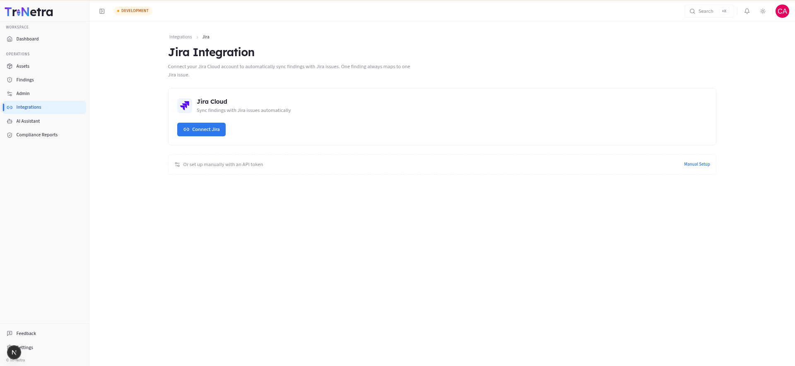
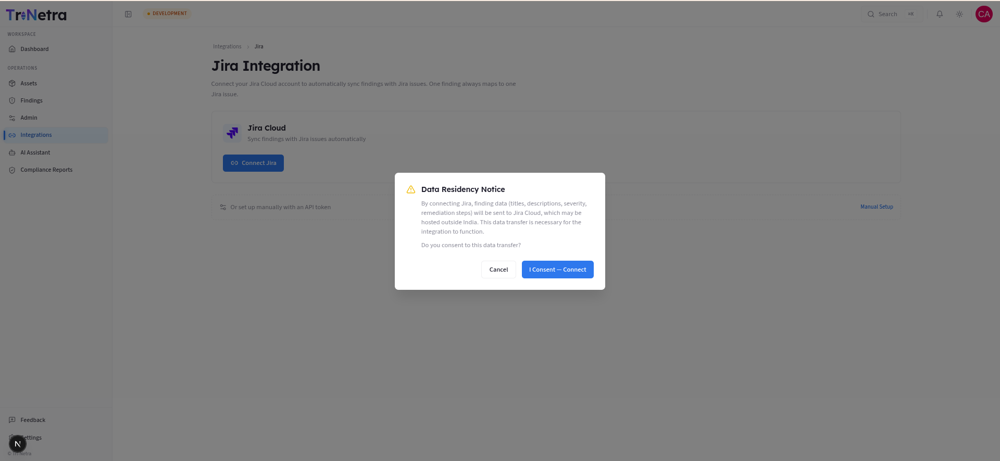
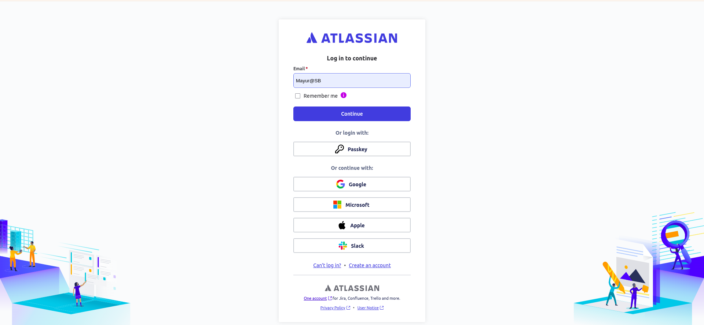

Integrations
Integrations (Jira)
1. What it does and why you'd use it
The Jira integration connects your organisation's Jira Cloud to SecurityBoat so security findings flow into your engineering workflow automatically. Instead of copy-pasting vulnerabilities into tickets, a finding becomes (and stays in sync with) a Jira issue.
The core rule: one finding always maps to one Jira issue. When a finding's state changes on SecurityBoat, the linked Jira issue can transition too (and vice versa, via the transition mappings you configure). This keeps your remediation board and your security findings in lockstep.
2. Who can do what
| Action | Client Admin | Client TPM | Client Viewer |
|---|---|---|---|
| View connection status & sync logs | ✅ | ✅ | ✅ |
| Connect / disconnect Jira | ✅ | ❌ | ❌ |
| Configure project & transition mappings | ✅ | ❌ | ❌ |
| Trigger a manual sync | ✅ | ❌ | ❌ |
Configuring an integration touches credentials and changes how data leaves your tenant, so it's restricted to Client Admin. TPM and Viewer can see that it's connected and inspect sync activity, but not change it.
Navigation
Click Integrations → Jira in the main sidebar menu.
3. The page, section by section



1. Connection card. Shows whether Jira is Connected or not. A Client Admin connects via the OAuth flow (authorise SecurityBoat against your Jira Cloud site).
2. Manual setup (shown when not connected). An alternative to OAuth — supply Jira connection details/API token manually if your org can't use the OAuth app.
Once connected, three more sections appear:
3. Project mappings. Decide which SecurityBoat context (e.g. an engagement or your whole org) pushes findings into which Jira project. This is what tells the sync "create issues for these findings in that project".
| Concept | Meaning |
|---|---|
| Map project | Link a source → a Jira project (issues get created there). |
| Unmap project | Remove a link (stops new issue creation for that source). |
4. Transition mappings. Map SecurityBoat finding states → Jira workflow transitions, so moving a finding (e.g. to Fix in progress) moves the Jira issue to the matching column, and Jira status changes flow back. Because every Jira project can have a different workflow, you define these per mapping.
5. Sync activity (logs). A running log of every sync event — what was pushed or pulled, when, and whether it succeeded. This is your audit trail and your first stop when something looks out of sync.
4. Typical setup flow (Client Admin)
- Connect your Jira Cloud (OAuth) — or use Manual setup.
- Map the relevant source(s) to your Jira project(s).
- Configure transition mappings so state changes line up with your Jira workflow columns.
- Let it run — findings sync automatically. Use manual sync if you need to force a refresh, and watch Sync activity to confirm.
Best practices
- Map transitions carefully. A mismatched transition mapping can leave issues stuck in the wrong column. Verify against a couple of test findings first.
- Use one project per engagement (or per app) to keep boards focused.
- Check Sync activity after the first few findings to confirm the mapping does what you expect before relying on it.
Troubleshooting
| Symptom | Cause / Fix |
|---|---|
| No Connect/Configure controls | You're Client TPM/Client Viewer — read-only. A Client Admin must set it up. |
| Findings aren't appearing in Jira | No project mapping for that source, or the connection dropped. Check the connection card and mappings. |
| Jira status changes aren't reflected | Transition mappings are missing/mismatched for that project's workflow. |
| A sync failed | Open Sync activity for the error detail; re-run a manual sync after fixing the cause. |
5. Slack (engagement chat mirrored to Slack)
Alongside Jira, SecurityBoat can mirror your pentest engagement chat into your Slack workspace, so your team can follow and reply to engagement conversations without leaving Slack.
What it does. Once your Slack workspace is connected, each new pentest engagement that uses Slack as its communication channel gets a dedicated Slack channel created automatically. Your engagement team members are auto-invited to it, and messages relay both ways — platform ↔ Slack. Internal notes are never relayed to Slack.
Who sets it up. Unlike Jira, the Slack workspace connection is configured by your SecurityBoat team (CSM / account admin) on your organisation's behalf — it isn't a self-service control in your client Integrations area. If you'd like Slack mirroring for your engagements, ask your CSM to connect your workspace and to select Slack as the communication channel when creating the engagement.
What you'll see. When it's active, an engagement's conversation appears in a Slack channel named for that engagement; anyone on your team who is a member of the connected Slack workspace is added automatically (people not in the workspace are simply skipped). You continue to use the in-platform engagement chat as normal — Slack is a mirror, not a replacement.